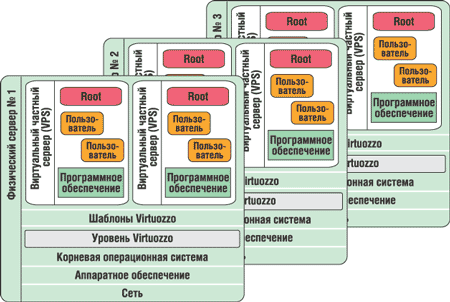
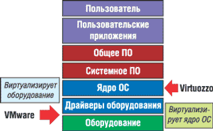
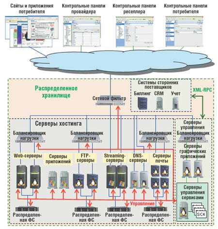
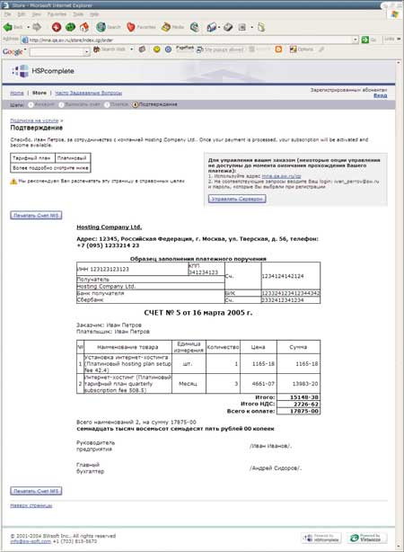
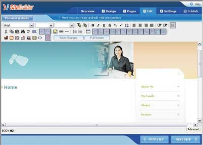

Александр Тормасов,
руководитель исследовательских работ компании SWsoft
к.ф.-м.н., доцент МФТИ
В последнее время мы наблюдаем оживленное внимание к виртуализационным технологиям. Продемонстрированный недавно активный интерес к этим технологиям такой компании, как Intel (анонс серии технологий VT - VT-x и VT-i состоялся на Intel Developers Forum в марте 2005 г.), заставляет обратить более пристальное внимание на существующие подходы в этой области.
Но в понятие виртуализации часто вкладывают разный смысл: виртуализация хранилищ данных, виртуальные сети и т. д. В этой статье мы будем понимать под виртуализацией именно виртуализацию компьютерных систем. Для начала кратко рассмотрим существующие в этой области подходы*.
* См. также обзор общих подходов в области виртуализации в статье "Virtuozzo: решение для серверной консолидации", "BYTE/Россия" No 12'2003.
Что такое виртуализация и виртуальный объект
Чтобы ответить на этот вопрос, необходимо вспомнить о "предметной области" - операционных системах. Их назначение всегда состояло в том, чтобы дать прикладным программам возможность исполняться, предоставляя им некий набор API. При помощи этого набора программа могла обращаться к внешним устройствам и файловой системе, посылать и получать сетевые пакеты данных, создавать и удалять другие процессы, обмениваться с ними информацией и т. п. А чтобы предоставлять такие возможности, ОС должны уметь работать с физическими устройствами.
Одной из основных функций ОС всегда была унификация способа взаимодействия пользовательских программ с аппаратной частью, и при этом обычно применялась какая-то реализация идеи виртуализации. Так, программа пользователя, работающая с файловой системой, размещенной на дисковом накопителе, видит его как некий обобщенный или виртуальный диск, не зная о технических деталях реализации того, что лежит "снизу", - скажем, SCSI это или IDE-диск, а, может быть, вообще USB флэш-устройство.
Другой смысл термина "виртуальный" - несуществующий физически. Например, виртуальная память процесса в некотором роде противопоставляется физической. Впрочем, и первый подход можно охарактеризовать как имеющий отношение к "несуществующему" виртуальному устройству, с которым работает сервис ОС, обеспечивающий возможности файловой системы поверх виртуального, обобщенного блочного хранилища данных с прямым доступом. Такое содержание термина "виртуальный" отражает один из доминирующих сейчас принципов организации ОС. Но и в этом плане существуют разные уровни виртуализации понятий.
До сих пор при реализации ОС виртуализация как подход наиболее активно использовалась на уровне именно устройств. Если рассмотреть традиционную иерархию понятий: нижний уровень - уровень прямого доступа к оборудованию, средний уровень - драйверов устройств, предоставляющих обобщенный интерфейс управления ими, и верхний уровень - набор сервисов ОС, предоставляемых уже приложениям пользователя, то можно отметить, что наиболее активно виртуализация применялась на среднем уровне. Когда появлялось новое устройство, то единственный способ его поддержки для приложений обычно сводился к тому, чтобы получить вместе с устройством некий "среднеуровневый" драйвер ОС, который непосредственно управлял самим устройством в "аппаратных" терминах (таких, как команды in/out и т. д.), предоставляя "наружу" возможность управления в терминах API (например, в виде графического драйвера, имеющего стандартный набор функций для рисования точек, линий, поверхностей и т. д.). Причем с точки зрения ОС этот интерфейс действительно был универсален для разных адаптеров устройств, т. е. в системе как бы было установлено одно или несколько "виртуальных" устройств, предоставляющих определенный сервис (в данном случае рисование изображения).
Тем не менее существовали и другие подходы, на других уровнях - верхнем и нижнем. Исторически сначала появился подход низкоуровневой виртуализации - когда ОС "подсовывалось" виртуальное, а не физическое устройство. Вообще, если рассматривать ОС как единый объект, обладающий некими "органами чувств", т. е. средствами общения с внешним миром, то для нее единственным способом определить наличие и состояние какого-либо объекта остаются стандартные действия, описываемые обычно производителем "железа" - начиная от детектирования подключения этого устройства (сейчас это обычно выполняется за счет специального протокола Plug-and-Play) до возможности "пощупать" оборудование путем выполнения каких-то конфигурационных действий (например, можно отправить на последовательный порт, к которому, как предполагается, подключен модем, текстовую строку "AT" и ожидать, что, если модем работает, обратно придет текстовая строка "OK").
В таких условиях появляется возможность создать своего рода виртуальную реальность для "органов чувств" ОС. Если сымитировать ответы физических устройств программным способом, то как раз и получится "виртуальная реальность", состоящая из виртуальных моделей физических устройств, которые дают вполне осмысленные ответы на запросы ОС и поведение которых максимально приближено к оригиналу. Иными словами, получится некая виртуальная среда - набор виртуального оборудования, которое практически полностью эквивалентно такому же набору физического оборудования - "ящику с компьютерным железом". Естественный следующий шаг - установка самой обычной ОС внутрь такого "виртуального ящика" и использование его для предоставления какого-либо сервиса.
Одной из первых по этому пути пошла компания IBM со своими мэйнфреймами, ОС OS/3x0 (последняя из них - OS/390), ОС VM и системой LPAR (Logical partitioning). Пользователь получал в свое распоряжение полноразмерный и полнофункциональный виртуальный компьютер, на который он мог поставить собственную версию ОС и установить собственное прикладное ПО. В этом компьютере имелась оперативная память, возможность использования ресурсов процессора, собственные виртуальные периферийные устройства (диск или сетевая карта) - практически все то, чем обладает обычный компьютер, только в виртуальном виде. Число виртуальных компьютеров, обслуживаемых на одном аппаратном компьютере, зависело от многих факторов, в частности, от лицензии, доступных ресурсов памяти или диска, возможностей центрального процессора и т. д. На мощной физической машине можно было запустить множество виртуальных; например, IBM утверждает, что на S/390 реально запустить более десятка тысяч копий виртуальных компьютеров с ОС Linux.
Упрощенную версию такого подхода (а может быть, и усложненную, это зависит от точки зрения) представляют собой эмуляторы ПК, распространенные на обычных IBM PC-совместимых компьютерах, - системы виртуальных машин (Virtual Machine, VM). Они реализуют аналогичный подход на традиционной архитектуре Intel x86 (хотя сейчас появляются и версии для 64-разрядной архитектуры Intel IA-64, но для простоты мы будем рассматривать системы для IA-32).
Существует несколько проектов эмуляторов, использующих разные технологии реализации и находящиеся на разных этапах своего жизненного цикла. Это и коммерческие реализации, такие, как предлагаемая компанией EMC VMware (http://www.vmware.com) или Microsoft Virtual PC/Virtual Server (http://www.microsoft.com), и открытые - например, проекты Xen (http://www.cl.cam.ac.uk/Research/SRG/netos/xen), Plex86 (http://www.plex86.org) и UML (http://usermodelinux.org) для ОС Linux. Практически все они включают так называемый VMM - монитор виртуальных машин, который обслуживает запросы виртуальных машин, выполняет эмуляцию памяти, разделение доступа к ресурсам, изоляцию и т. д. Сам VMM обычно загружается через так называемую Host OS (основную ОС) - ту копию ОС, которая сама непосредственно работает с физическими устройствами.
Принцип использования ресурсов основной ОС близок к идее разделов: такие ресурсы, как оперативная память компьютера и дисковое пространство, делятся между экземплярами запущенных эмуляторов, практически исключая совместное использование. Копия ОС, вернее, набора ее файлов, необходимых для функционирования ОС, у каждого экземпляра виртуального компьютера будет своя. Особая сложность - эффективное использование собственной оперативной памяти виртуального компьютера, поскольку ее практически никак нельзя разделить между разными экземплярами VM эмуляторов. Отдельную проблему в такого рода решениях создает и тот факт, что ОС внутри эмулятора ничего не знает о существовании внешней ОС и, например, считает своим долгом в случае отсутствия активности своих процессов загрузить процессор выполнением процесса типа idle (в Unix). Еще одна проблема - двойное кэширование данных: обращение к данным пытаются кэшировать обе ОС, что явно не повышает производительность. Надо отметить, что другие ресурсы, например, сетевая плата или процессоры, честно делятся между всеми экземплярами эмуляторов. В результате работа одного ядра ОС внутри другого приводит к существенной потере производительности системы в целом. Такая реализация системы не позволяет запускать достаточно большое число экземпляров виртуальных машин на одном компьютере; практически допустимое их число лежит в диапазоне от одной до четырех-пяти на типовую рабочую станцию.
Технически реализация подобных VM-систем в архитектуре x86 - весьма непростая задача, так как при проектировании Intel не предусматривала подобных задач. В результате часть команд, которые могут выполнять ОС, не должны быть разрешены для исполнения внутри VM. Самым простым способом решения этой проблемы была бы возможность получать так называемые прерывания или исключения при попытке выполнения этих команд внутри VM, с тем чтобы обрабатывать их внутри VMM. Но проблема в том, что простого способа вызвать это исключение для некоторого класса команд не существует. Они просто отработают внутри VM, дав при этом не тот результат, которого ожидали разработчики ОС, причем иногда выполнение такой небезопасной команды может вызвать сбой в основной ОС или даже зависание всего компьютера. Для решения этих проблем разработчики эмуляторов обычно применяют разные подходы - от простой пошаговой эмуляции каждой инструкции, выполняемой внутри VM, до сложных оптимизаций, например, бинарной трансляции исполняемого кода перед его реальным исполнением.
Недавно компания Intel анонсировала поддержку виртуализации инструкций, вернее, возможность специального способа исполнения инструкций, удобного для реализации таких эмуляторов, во всех типах своих новых процессоров архитектур IA-32 и IA-64 - как для серверов, так и для рабочих станций. Подобная поддержка теоретически упростит создание аналогичных программных продуктов (хотя вопрос о реальной степени ускорения процедур эмуляции архитектуры остается пока открытым). Тем не менее этот анонс ведущего производителя процессоров говорит о том, что в достаточно близком будущем использование технологий VM может стать повсеместным.
Виртуализация на высоком уровне
Посмотрим теперь на другой уровень виртуализации - высокоуровневую виртуализацию. Чтобы разобраться в ней, стоит выяснить, зачем вообще нужна виртуализация.
Если говорить о нижнем уровне, то цель виртуализации "физического ящика с оборудованием" может быть разной, но обычно такие VM используются для упрощения установки и развертывания машин (ведь все виртуальные эмуляторы обычно имеют одинаковую конфигурацию), например, при тестировании. Иногда VM также применяют для консолидации серверов или для поддержки старых приложений, которые не могут работать с новыми версиями ОС (именно для таких целей Microsoft предлагает использовать свой Virtual Server). Виртуализация также удобна для отладки программ, опробования новых версий "заплаток" (не "сломают" ли они имеющиеся программы) и т. д.
Если взять средний уровень, там цель, казалось бы, очевидна - надо уметь использовать в рамках одной ОС максимальное разнообразие физических устройств, а следовательно, предоставлять пользовательским и системным процессам унифицированный интерфейс взаимодействия.
Но, если вдуматься, для пользовательских процессов ОС, - которые, собственно, и предоставляют сервисы пользователям, - наличие "виртуального оборудования", в общем-то, безразлично, их интересует только, чтобы те способы коммуникации, которые они применяют для связи с ОС, отрабатывались наиболее удобным и эффективным образом. Вот так и появляется "высокоуровневая виртуализация", которая обеспечивает для каждой среды исполнения (будем называть ее виртуальным частным сервером - VPS) свое собственное уникальное изолированное окружение - свои файлы и другие ресурсы (в том числе системные), свои сервисы, свои системные способы связи с внешним миром и т. д.
Иными словами, с точки зрения приложения оно запускается в собственном компьютере с основной ОС, и пользователь может делать с этой средой (VPS) все, что обычно может делать администратор машины, - запускать и останавливать приложения и системные сервисы, устанавливать обновления приложений, конфигурировать сеть и сетевой экран, перезапускать VPS. От оборудования, как видно из рис. 1, среда пользователя (VPS) отделена специальным "уровнем Virtuozzo", вводящим понятие VPS в корневую (или основную) ОС. Кроме того, появляются дополнительные возможности, которые не так просто реализовать на физическом компьютере или внутри VM - например, быстрая и эффективная установка приложений внутри множества VPS, быстрая миграция (со временем недоступности сервера 1-3 с или даже вообще без остановки сервисов и прерывания сетевых сессий), динамическое управление ресурсами системы, выделяемыми конкретному VPS.
|  |
| Рис. 1. Virtuozzo - реализация технологии виртуального приватного сервера VPS.
|
Технология VPS находится "выше" технологии VM, их различие по отношению к архитектуре иллюстрирует рис. 2.
|  | Рис. 2. Уровни реализации Virtual Machine и Virtual Private Server (на примере технологий VMware и Virtuozzo).
|
Далее в статье мы будем ссылаться на набор решений в области виртуализации, предоставляемых компанией SWsoft (http://www.sw-soft.com), которая c 1999 г. занимается разработкой и поддержкой технологий VPS. На ее счету уже более 200 тыс. VPS в реальном промышленном использовании (в основном в составе решений для автоматизации хостинга, большей частью на базе ОС Linux). Недавно компания анонсировала начало продаж версии для поддержки VPS на базе Microsoft Windows Server 2003.
Из практики российского хостинг-провайдераРассказывает Георгий Георгиевский, генеральный директор хостинг-провайдера "Русоникс". Наша компания использует разработки SWsoft не первый год. Своим клиентам мы предлагаем разные услуги хостинга, построенные на общей технологической концепции VE (Virtual Environment). Это позволяет нам свести к минимуму влияние клиентов друг на друга и дать каждому клиенту возможность индивидуальных решений и настроек. Применение технологии Virtuozzo позволяет нам максимально задействовать "железо", так как можно эффективно "утилизировать" ресурсы, распределяя их между разными VE. Используя разработки SWsoft, мы смогли предложить рынку хостинга массовую услугу виртуального выделенного сервера (VPS) по цене заметно более низкой, чем обычный выделенный хостинг. Для больших проектов и нестандартных задач обычно используется выделенный физический сервер, финансовые вложения в приобретение и поддержку которого достаточно высоки. Выигрыш от применения выделенного физического сервера в том, что пользователь может настраивать нужное ПО, оптимизировать производительность системы, устанавливать необходимые приложения. Однако зачастую из возможностей физического сервера используется лишь малая часть. VPS - сервер виртуальный, но, несмотря на это, управлять им можно как физическим, стоящим на столе или у провайдера в дата-центре. Здесь возможен полноценный доступ с правами root (uid=0), конфигурация любых системных параметров и установка любого необходимого ПО. Нужно также отметить удобство технологии Virtuozzo в предоставлении такой услуги, как Managed Dedicated - управляемый выделенный сервер. Такая услуга становится все популярнее. Суть ее - один VPS на одном физическом сервере. Клиент получает, с одной стороны, полностью выделенный под него физический сервер, а с другой - виртуальное окружение, которым достаточно просто управлять удаленно. Немалой подмогой в этом служит специальный компонент Virtuozzo - панель управления VZPP. Это специальный Web-интерфейс, через который можно, не прибегая к помощи хостинг-провайдера, управлять как сервером (от перезагрузки до переустановки приложений и ОС), так и множеством ресурсов и параметров установленной на VPS ОС, наблюдать за загрузкой процессора, системы в целом, вести мониторинг использования дисковой подсистемы и различных системных журналов VPS. Для управления виртуальными серверами и продажами "Русоникс" использует продукт HSPcomplete, также разработанный компанией SWsoft. В этом решении есть все необходимое - от административной и пользовательских панелей управления до учетной системы лицевых счетов клиентов. С его помощью мы теперь сможем предоставлять нашим клиентам первичную бухгалтерскую отчетную документацию, которая формируется самой учетной системой. |
Цели и задачи виртуализации
Какие же задачи можно решать при помощи виртуальной среды (VPS) или виртуальной машины (VM)? Ответ - самые разнообразные. Действительно, как-то их классифицировать или ранжировать довольно трудно. Технически VM и VPS представляют собой практически полноценный компьютер, т. е. их можно использовать для всего того, для чего используют обычный компьютер. Наверное, проще будет описать для каждого способа те задачи, которые он решать не может или решает неэффективно.
Начнем с VM. Чем все же отличается VM и запущенная в ней программа от обычного компьютера-ящика? В первую очередь VM потребляет больше ресурсов, так как у нее есть накладные расходы (и немалые) на обслуживание собственно самой VM, VMM, Host OS и т. д. Это означает, что приложение, запущенное в VM, получит в свое распоряжение меньше ресурсов, чем такое же приложение, запущенное в такой же среде, установленной не внутри VM, а внутри обычного "железного" компьютера. Потери могут быть довольно велики - до 20-30% ресурсов процессора (в зависимости от нагрузки), минимум 20% физической памяти (обычно больше); может также быть ограничено число процессоров, видимых внутри VM, а при наличии сколько-нибудь экзотического оборудования - доступ к нему. Например, если на вашем компьютере оказалась карта со специальным видеоускорителем или современная сложная карта SAN, с большой вероятностью использовать их внутри VM так, как хотелось бы, вам не удастся.
Естественное следствие таких ограничений - невозможность массового использования множества VM на одном физическом компьютере. Обычно допустимое число VM составляет от 2-4 на обычной машине до 50 на высокопроизводительных серверах (и то только в одной определенной версии VM-системы, в типовом случае сервер может обслужить десяток машин).
Другим, достаточно неочевидным, ограничением может стать потребность в лицензиях. Многие приложения и системы сейчас лицензируются для определенного числа копий бинарных файлов, загруженных в память (такова, например, ситуация с Microsoft Windows Server 2003), и для каждой их копии в VM необходимо купить отдельную лицензию - а их общая цена может многократно превышать стоимость оборудования, использованного для данного физического сервера!
Ограничения на использование технологии VPS - несколько другого рода и связаны обычно со способом ее реализации. Например, технология Virtuozzo подразумевает, что каждый запущенный на машине VPS использует одно и то же ядро и изнутри VPS нельзя менять существенные компоненты или версию ядра. Впрочем, это не означает, что нельзя применять, скажем, разные "заплатки" на разные VPS, если они не затрагивают собственно ядра или модулей в Linux либо существенных библиотек или исполняемых файлов ядра Microsoft Windows. Других существенных ограничений, в общем-то, нет (за исключением прямого доступа к оборудованию, который опять-таки ограничен изнутри VPS соображениями безопасности).
Есть еще некоторые ограничения, присущие той или другой реализации, - например, в VPS в любой момент обычно возможен прямой административный доступ к файлам из основной ОС, тогда как в типовых VM-реализациях он возможен только по сети, если это сделал администратор соответствующей VM; и наоборот, в VM есть возможность сделать "снимок" состояния системы для дальнейшего возвращения к этому состоянию (snapshot), а в VPS обычно это делается по-другому.
Использование виртуализации
Естественно, что для разных целей требуются разные виды виртуализации. Говорить о них абстрактно трудно, потому что для любой сколько-нибудь крупной организации нужно создавать комплексное решение, включающее достаточно широкий набор ПО, в том числе даже административные меры по управлению. Для простоты рассмотрим два распространенных направления - автоматизацию деятельности центров данных предприятий и использование виртуализации для хостинга.
Процесс автоматизации центров данных на самом деле имеет множество аспектов, и вряд ли существует ИТ-компания, которая может претендовать на поставку "абсолютно полного решения". Если говорить о виртуализационной части решения и тех задачах, что могут решаться на ее базе, то следует отметить возможность решения задач унификации используемых серверов, мобильности пользователей, проблем быстроты развертки и предоставления серверов. Современная инфраструктура предприятия, оказывающего услуги хостинга (рис. 3), насчитывает множество серверов, базирующихся на распределенной файловой системе (ФС) или хранилище данных, средства управления, балансировки нагрузки, учета и т. д.
|  |
| Рис. 3. Динамическая ИТ-инфраструктура хостинг-провайдера нового поколения.
|
Необходимость унификации серверов и сервисов достаточно очевидна - при их обслуживании хочется тратить минимум времени как на установку и обслуживание оборудования, так и на конфигурирование ОС и приложений. Если в компании покупают оборудование у разных поставщиков (или даже у одного), то компьютеры имеют достаточно разную конфигурацию. Если при их установке, скажем, просто "залить" имеющий образ диска на новый компьютер, то ожидать, что полученная система будет работать, обычно не приходится. Пример проблем - разный размер памяти или диска, разное количество процессоров, разные видеоадаптеры и сетевые карты, которым нужны собственные уникальные драйверы (это, кстати, обычно наиболее существенная проблема), и т. д. Другая проблема - необходимость установки и конфигурирования приложений и ОС.
Значительную часть такого рода проблем можно разрешить путем унификации окружения. Это достигается при помощи как VM-, так и VPS-технологий - но несколько по-разному. Преимущество использования VM - действительная унификация оборудования для гостевой системы. Иными словами, она всегда видит один и тот же набор "железа", и не нужно заниматься тюнингом "внутренностей" ОС - можно просто скопировать файл или содержимое раздела диска, в котором находится образ системы. Правда, такая операция обычно требует много ресурсов, поскольку объем этих данных достигает сотен гигабайт, и просто "переложить" их с места на место уже не так легко.
Преимущество VPS в том, что они предоставляют программную среду. Свежесозданный VPS универсален, содержит все необходимые файлы ОС и приложений, но вместе с тем при его создании система должна "переложить" с места на место значительно меньше данных (для примера - вновь созданный VPS на базе Red Hat Linux занимает на диске только 35 Мбайт на диске, VPS на базе Windows Server 2003 Enterprise Edition - 3 Мбайт, причем внутри VPS пользователь видит все системные и прикладные файлы как свои собственные и может их изменять, будучи ограничен только наложенной дисковой квотой).
Другое преимущество VPS - "легковесность"; как следствие, на одной машине можно запускать множество VPS (скажем, в качестве теста на обычной серверной машине было запущено более 5000 Linux VPS), причем каждый VPS может немедленно получить доступ ко всем ресурсам машины (полная физическая память, все процессоры системы, весь диск, сеть и т. д.).
Таким образом, задачу быстрого развертывания рабочих сред для пользователя можно легко и изящно решить развертыванием системы на базе виртуальных серверов.
Так же легко и изящно решается задача консолидации серверов, т. е. сведения нескольких физических серверов в один без потерь в конфигурируемости и удобстве обслуживания. Исторически на большинстве предприятий применялась схема "один сервис = один сервер"; это означает, что для обслуживания, скажем, почты, интрасети и файл-сервера устанавливается минимум три физических компьютера. В итоге оказывается, что типичный уровень загрузки системы колеблется от 0,5 до 20%. Кроме того, следствием такой политики становится "зверинец" самых разнообразных версий ОС, "заплаток", сервисов, серверов и т. д., который не просто дорог как набор железа и программ, но и требует множества усилий в обслуживании. Если собрать все такие системы в виртуальные серверы (VM или VPS), то можно облегчить работу администраторов, сократить затраты на оборудование и обслуживание.
Одно из неочевидных следствий подобного подхода - значительное повышение уровня надежности системы. Дело в том, что появляется экономическая целесообразность покупать небольшое количество высокопроизводительных и высоконадежных серверов от известных мировых поставщиков (не секрет, что поставить дорогой сервер с резервированием и высокой надежностью на обслуживание тривиального файл-сервера могут себе позволить только обеспеченные компании с большим ИТ-бюджетом). Таким образом, сервер, на котором будут работать VM или VPS, окажется много более надежен, чем обычные. Так как большинство поставщиков решений виртуализации поставляют и утилиты массового обслуживания, работа по установке, например, "заплаток" или новых версий программ существенно упрощается. Например, компания SWsoft поставляет средства массового управления VPS в составе как технологии Virtuozzo, так и продукта автоматизации HSPcomplete (см. врезку). В частности, рис. 4 иллюстрирует процедуру покупки пользователем VPS у провайдера, вернее, ее последнюю стадию - выставление счета (для российских потребителей). Для автоматизации же центров данных крупных предприятий предназначен продукт Plesk Enterprise Manager (PEM).
|  |
| Рис. 4. Образец счета, выставленного системой HPScomplete.
|
Одна из интересных задач, которые эффективно решаются путем использования средств виртуализации и управления типа HSPcomplete на базе технологии Virtuozzo, - обеспечение мобильности и управляемости среды пользователя, т. е. возможности максимально быстро и с малым количеством затраченных ресурсов (таких, как объем загруженных по сети данных или число дисковых операций) проделать все необходимые в процессе жизненного цикла VPS действия - создание, конфигурирование, установку и доустановку приложений и "заплаток", их использование, архивирование и восстановление, перенос и, наконец, удаление всех связанных с VPS ресурсов центра данных - от дискового пространства, лицензии на приложение, вычислительной мощности до количества обращений пользователя этого VPS в службу поддержки.
Если говорить о специфике задач хостинга, то основное требование к их решению - его экономическая эффективность. Рынок хостинга чрезвычайно конкурентен, пользователи обычно не замкнуты в рамках одной страны и всегда ищут оптимальное по цене решение.
В такой ситуации максимальная автоматизация рутинных операций, в результате которой администратор хостера может уделять внимание не рутине, а действительно важным проблемам, становится критическим требованием к средству поддержки работы. Предоставление решения "из одних рук" - один из способов экономии на усилиях, которые пришлось бы потратить на сопряжение решений от разных поставщиков. HSPcomplete - это именно такое решение, автоматизирующее все этапы рабочего цикла хостера.
Но управление бизнесом со стороны хостера - не единственное, что требует автоматизации. К примеру, для пользователей компания SWsoft с недавнего времени поставляет такой полезный продукт, как средство создания сайтов SiteBuilder (рис. 5).
|  |
| Рис. 5. Образец экрана, который видит пользователь, редактирующий содержимое сайта с помощью SiteBuilder.
|
Необходимы также средства управления VPS для пользователя, средства многоуровневого администрирования, позволяющие делегировать часть административных операций от одного пользователя другому, вплоть до администратора хостера. Для управления (вернее, самоуправления) пользователю обычно предоставляется контрольная панель, при помощи которой можно загрузить содержимое сайта, создать пользователей и т. д. Для этих целей существует продукт под названием Plesk (см. врезку).
Технологии SWsoftКомпания SWsoft (http://www.sw-soft.com, http://www.swsoft.ru) - один из ведущих мировых разработчиков ПО для автоматизации хостинга и виртуализации серверов предприятий и фирм, предоставляющих услуги хостинга и телекоммуникаций. Штаб-квартира компании находится в Херндоне (шт. Вирджиния, США), разработки и исследования ведутся в России. Более 80 тыс. клиентских серверов в 100 странах мира работают на технологиях SWsoft - Plesk, Virtuozzo, HSPcomplete и PEM. Технология Virtuozzo дает возможность хостинговым компаниям предлагать заказчикам VPS - виртуальные частные серверы. VPS представляет собой нечто среднее между разделяемым (shared) и выделенным (dedicated) сервисом. Технология Virtuozzo позволяет создать множество изолированных VPS на едином физическом компьютере, которые смогут максимально эффективно разделять ресурсы оборудования, лицензии и усилия по администрированию. С точки зрения пользователя и приложений каждый VPS ведет себя в точности как обычный отдельный сервер. VPS можно перезапустить независимо от других, в нем имеется полный административный доступ для пользователя root или Administrator (соответственно для Unix/Linux или Microsoft Windows), свои собственные уникальные наборы пользователей, свои IP- и DNS-адреса, процессы, структуры данных ядра ОС, файлы, приложения, системные библиотеки и конфигурационные файлы ОС. Virtuozzo позволяет достичь много более высокого уровня полезной загрузки серверов и разделить стоимость лицензий на ОС и приложения для уменьшения общей стоимости ИТ-инфраструктуры и сервисов. Пользователи VPS получают всю гибкость и функциональность выделенного сервера, а провайдеры хостинга на базе VPS - возможность эффективно организовать высокоприбыльный сервис. Для высококвалифицированных и "технических" потребителей службы на базе VPS предоставляют идеальное решение, дающее свободу в выборе ПО и его версий для создания сайтов и связанных с ним сервисов. Технология Virtuozzo гарантирует, что никакой VPS не сможет "сломать" или повлиять на поведение других VPS этого же сервера и что каждый VPS получит заказанные компьютерные ресурсы, включая такие важные, как сетевая полоса пропускания, дисковая квота или доля ресурсов процессора. HSPcomplete - это полное решение для автоматизации хостинга, в том числе с использованием технологии Virtuozzo. Включает управление аппаратными средствами, ОС, приложениями, резервными копиями, IP-пулами, счетами клиентов, реселлерами, магазинами электронной коммерции и платежами клиентов. Гибкая биллинговая система интегрирована с автоматической выпиской счетов, способной обслуживать от десятков до тысяч счетов пользователей. Возможны варианты использования HSPcomplete для автоматизации всех операций хостинг-провайдера или для управления системой виртуальных выделенных серверов на базе Virtuozzo. Серия продуктов под общим названием Plesk представляет собой ПО, специально созданное для индустрии хостинга при помощи профессионалов - провайдеров Web-серверов. Основной целью при разработке Plesk была возможность предоставить хостинговой компании средства администрирования, автоматизации и управления разделяемым и выделенным сервисами хостинга на отдельном сервере. Существует также версия программы под названием Plesk-Expand, дающая возможность управлять несколькими разделяемыми серверами хостинга. Среди возможностей ПО Plesk можно выделить следующие:
Выпуск PEM (Plesk Enterprise Manager) ознаменовал появление третьего поколения распределенных динамических платформ автоматизации хостинга, позволяющих распределять и управлять учетными записями пользователей в информационных центрах - главных сетевых узлах и других точках сбора данных. PEM автоматизирует установку и управление серверами, управление реселлерами и биллингом. Он использует технологию CORBA, стандарт для передачи информации между приложениями, работающими на разных платформах. SiteBuilder - приложение для создания и редактирования сайтов непосредственно в окне браузера, реализующее принцип WYSIWYG. С помощью SiteBuilder провайдеры услуг хостинга могут с легкостью предоставлять клиентам средства построения сайтов. От клиентов не требуется никаких технических знаний, так как сайты создаются, изменяются и обновляются с помощью интуитивно понятного пятишагового мастера. ПО SiteBuilder может быть интегрировано с Plesk. |